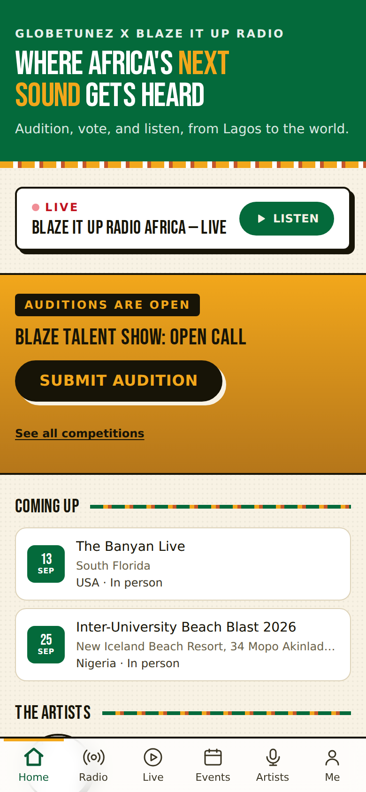
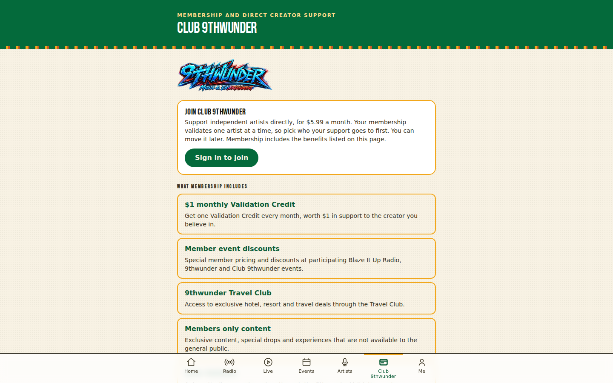

1 · Køb
Stripe Checkout i dollars, Paystack i naira
Pladsen reserveres i 15 minutter, mens betalingen gennemføres. En gentaget forespørgsel åbner aldrig en ny betaling for den samme ordre.
Case 03 · Partnerprojekt
GlobeTunez er en installerbar web-app for Blaze It Up Radio Africa og 9thwunder: live radio, kunstnerprofiler, auditions med afstemning, events med billetsalg og en medlemsklub. Bygget mobile-first til billige Android-telefoner og ustabile netværk, med to AI-agenter som udviklingspartnere under skrevne regler.
Partnerprojekt med Blaze It Up Radio Africa og 9thwunder. Casen beskriver kun teknik og arbejdsform. Den indeholder ingen bruger-, omsætnings- eller partnertal, fordi platformen endnu ikke er lanceret offentligt. Alle tal er fra git-historik, kildekode og CI-kørsler pr. 14. september 2026.
01 · Opgaven
Blaze It Up Radio Africa og 9thwunder er et eksisterende græsrodsmiljø i Nigeria: en radiostation, talentshows med afstemning, fysiske koncerter og et magasin. Værten modtager allerede mange audition-videoer fra kunstnere og afholder konkurrencer, hvor publikum stemmer ved selve arrangementet. Det hele kørte på løse kanaler, uden ét sted hvor fans og kunstnere kunne mødes mellem events.
Opgaven blev at bygge det sted uden at erstatte det fysiske: en app, der forlænger et event før, under og efter. Fans lytter til radioen, opdager kunstnere, ser og stemmer på auditions, køber billetter og kan melde sig ind i klubben. Kunstnere indsender auditions, får en profil, følgere og adgang til næste mulighed. Arrangøren moderer, åbner og lukker afstemninger, scanner billetter ved døren og ser resultater.
Rammerne var hårde fra start: mange brugere har billige Android-telefoner, dyr data og ustabilt netværk. Derfor er appen en installerbar PWA uden app-butik, med én webfont, tydelige handlinger som LISTEN LIVE, VOTE og BUY TICKET, og en regel om at hver netværkshandling skal have en tilstand for indlæsning, succes og sikker fejl med mulighed for at prøve igen.
02 · Sådan hænger det sammen
En modulær monolit: én Next.js-app mod én Postgres-database, hvor adgangskontrol ligger som Row Level Security i selve databasen og testes med pgTAP. Frontend skjuler aldrig noget som sikkerhed; det afgør databasen.
Betalinger følger én regel: hovedbogen er sandheden. En webhook fra Stripe eller Paystack verificeres med signatur, reference, beløb, valuta og produkt, før appen udsteder noget, og den samme hændelse kan ikke udstede to gange. Rigtige penge kan slet ikke flyde, før en manuel låge er åbnet af et menneske; indtil da er alle køb simulerede og mærket som sådan.
1 · Køb
Pladsen reserveres i 15 minutter, mens betalingen gennemføres. En gentaget forespørgsel åbner aldrig en ny betaling for den samme ordre.
2 · Webhook
3 · Hovedbog
Hovedbogen er sandheden. Er pladsen i mellemtiden udsolgt, oprettes en refusionsanmodning i stedet for en billet.
4 · Billet
Billetten overlever, at kontoen slettes. En refusion trækker den tilbage igen; det er bevist i databasetestene og øvet i produktion den 14. september.
03 · Teknikken
| Del | Værktøj |
|---|---|
| Frontend | Next.js 16 (App Router), React 19, TypeScript 5.9, Tailwind CSS 4; leveret som PWA med service worker og offline-side |
| Data | Supabase: Postgres med Row Level Security, Auth, Storage. Skemaet findes kun som 105 versionerede migrationer, aldrig håndredigeret |
| Betaling | Stripe Checkout til billetter i USD og automatisk fornyede medlemskaber; Paystack til billetter i naira. Alt bag en manuel låge, donationer ikke bygget |
| Radio | Stationens eksisterende stream afspilles i appen; "senest spillet" hentes fra radioens egen API, intet opdigtes |
| Test | 1.587 unit tests (Vitest, Testing Library), 1.126 pgTAP-assertions i 67 SQL-filer, Playwright-kørsler for tilgængelighed, ydelse og kritiske brugerrejser |
| CI | GitHub Actions med tre jobs på hvert push: app (lint, typer, tests, build), database (migrationer og pgTAP i en frisk Postgres) og kritiske browserforløb. 146 kørsler |
| Hosting | Vercel og hostet Supabase i produktion; lokal Supabase-stack i Docker til udvikling og test. Live video: ingen leverandør valgt endnu |
supabase/tests/. 58 af de 67 filer skifter databaserolle undervejs (anonym, logget ind, service) og prøver at læse eller skrive det, rollen ikke må. Tilsammen 1.126 assertions, alle grønne i CI-kørsel 146.04 · Sådan ser det ud
Taget fra produktionssitet den 5. oktober 2026. Det er den offentlige del, som alle kan se; events og konkurrencer er dem, der faktisk lå i databasen den dag.




Admin-delen er bygget til én arrangør på en telefon, ikke til en analytiker ved et skrivebord. Den viser kun det, der kræver en beslutning, og hver handling, der rører penge eller offentliggørelse, forklarer sig selv, før den udføres. Skærmbilleder herfra er med vilje udeladt, fordi de viser pilotens kontotal og testbetalinger.
05 · Arbejdsformen
Koden er skrevet af Claude Code og Codex, som skiftevis implementerede og gennemgik hinandens arbejde. Min rolle var produktbeslutninger, godkendelser og alt der rører produktion: anvende migrationer, verificere i den hostede database og tage de menneskelige låger, som agenterne ikke må åbne selv.
Det fungerede, fordi reglerne stod på skrift i repoet. Dokumentationen er en del af produktet: en ændring uden opdateret TODO, handover, changelog og beslutningslog er ikke færdig. Det er tydeligt i tallene. Beslutningsloggen rummer over 240 nummererede arkitekturbeslutninger, og changelog, beslutningslog og handover fylder tilsammen over en megabyte tekst.
Før en kodeændring læser agenten produkt-, scope-, arkitektur-, sikkerheds- og beslutningsdokumenterne. Ingen må udskifte framework, database, betalings- eller streamingleverandør uden et konkret problem, alternativer og menneskelig godkendelse.
Reviewrunderne mellem de to agenter fandt blandt andet et race condition, hvor to samtidige godkendelser kunne overskrive hinanden, og en godkendelse, der kunne degradere en admin. Begge blev rettet og bevist med to reelt samtidige databaseforbindelser, ikke kun resonneret om.
Indtil 24. august kørte alle tests kun, når nogen huskede det, på én laptop. CI blev indført, efter at changelogen havde påstået 85 testfiler, hvor der var 83. Nu genudregnes hvert tal på hvert push, og denne case bruger kun tal fra den seneste grønne kørsel.
Da en tester i Nigeria ikke kunne modtage sms-koder, blev hændelsen diagnosticeret read-only i produktion, dokumenteret med tidsstempler og fejlkoder, og først derefter rettet i appens fejltekster og telefonnummer-håndtering. Ingen gættede løsninger blev slået til.
fbb90fc, 14. september 2026. De tre jobs kører parallelt, så et push er færdigkontrolleret, når det langsomste er i mål. Varighederne er GitHub Actions' egne tidsstempler pr. trin.06 · Forløbet
Fra første commit til pilot på 30 arbejdsdage. Datoerne er fra git-historikken og beslutningsloggen.
Hold musen over eller tryk på en søjle for dato og antal.
git log i app-repoet; lyse søjler er weekend, grå er dage uden commits. Tempoet falder bevidst i september: der flyttes arbejde fra kode til drift, dokumentation og test med rigtige mennesker.07 · Grænser og fravalg
Appen kører i en lukket pilot med testere. Derfor står der ingen brugertal, afstemningstal eller omsætning her, og skærmbillederne viser kun den offentlige del. Admin er beskrevet i tekst, ikke vist.
Billetter og medlemskaber er bygget mod Stripe og Paystack, men står bag en manuel låge. Donationer og medlemskaber i naira er ikke bygget. Udbetaling til kunstnere sker manuelt og gennemgået, aldrig automatisk.
Live-deltagelse (stem, ønsk en sang, følg den der spiller) er bygget, men selve videoen afventer et valg mellem Mux, Cloudflare Stream og Amazon IVS efter en prøve på et rigtigt netværk i Nigeria.
Et bredt socialt feed med opslag, kommentarer og beskeder er bevidst fravalgt i første version. Kernen er kæden fra audition til afstemning til event til støtte, ikke endnu et socialt netværk.
08 · Kontakt